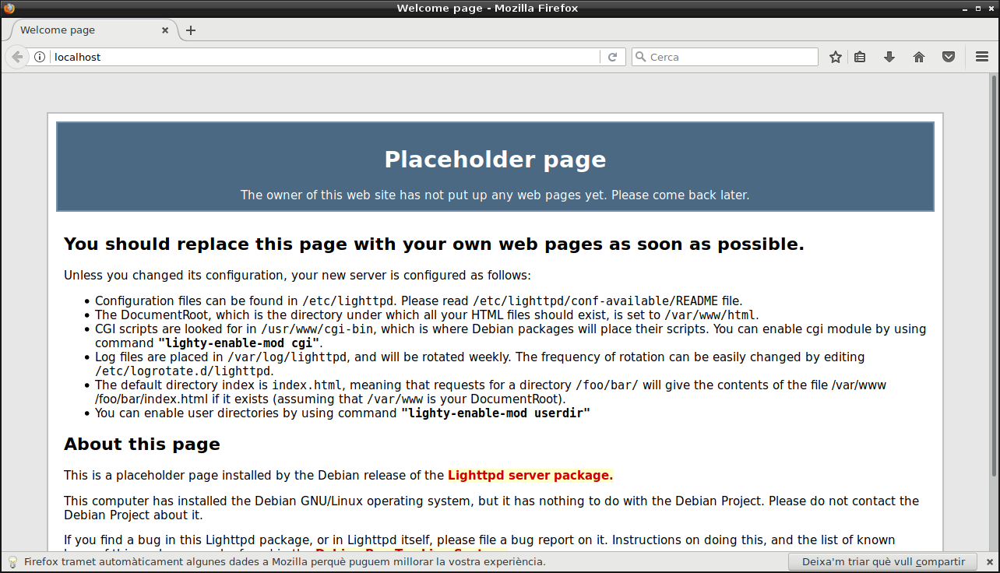
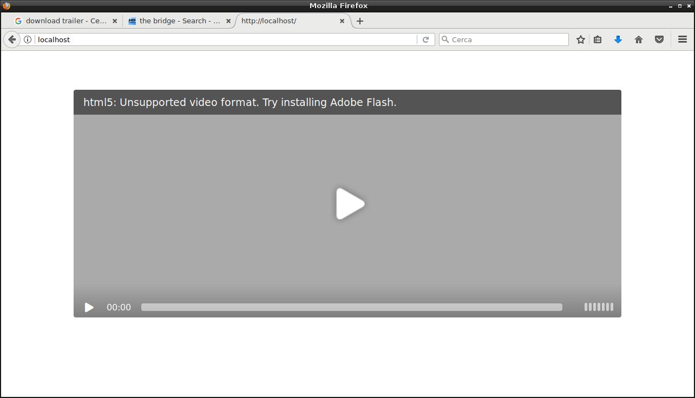
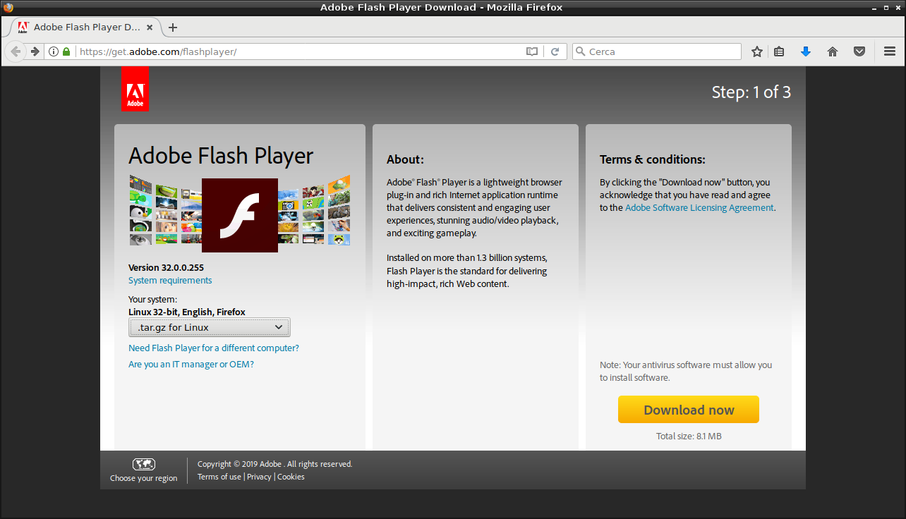
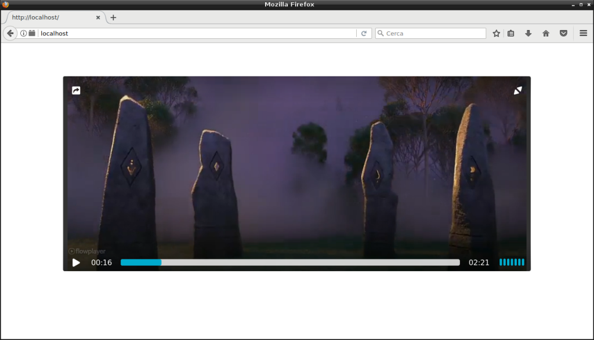

1. Instal·lació del servidor web Lighttpd.
Cerquem el nom del paquet per al servidor Lighttpd. Usarem el paràmetre –names-only per tal que no busqui a dins dels paquets i així afinar el resultat, si no el llistat és molt llarg:
# apt-cache search --names-only lighttp
lighttpd - fast webserver with minimal memory footprint
lighttpd-doc - documentation for lighttpd
lighttpd-mod-authn-gssapi - GGSAPI authentication for lighttpd
lighttpd-mod-authn-ldap - LDAP authentication for lighttpd
lighttpd-mod-authn-mysql - MySQL authentication for lighttpd
lighttpd-mod-cml - cache meta language module for lighttpd
lighttpd-mod-geoip - GeoIP restrictions for lighttpd
lighttpd-mod-magnet - control the request handling module for lighttpd
lighttpd-mod-mysql-vhost - MySQL-based virtual host configuration for lighttpd
lighttpd-mod-trigger-b4-dl - anti-deep-linking module for lighttpd
lighttpd-mod-webdav - WebDAV module for lighttpd
root@server:~#
Instal·lem el servidor:
# apt-get install lighttpd
S'està llegint la llista de paquets… Fet
S'està construint l'arbre de dependències
S'està llegint la informació de l'estat… Fet
El paquets següents s'han instal·lat automàticament i ja no serà necessaris:
erlang-asn1 erlang-base erlang-crypto erlang-edoc erlang-goldrush erlang-inets erlang-jiffy erlang-lager erlang-mnesia erlang-odbc
erlang-p1-cache-tab erlang-p1-iconv erlang-p1-stringprep erlang-p1-tls erlang-p1-utils erlang-p1-xml erlang-p1-yaml erlang-p1-zlib
erlang-proper erlang-public-key erlang-runtime-tools erlang-ssl erlang-syntax-tools erlang-xmerl libnginx-mod-http-auth-pam
libnginx-mod-http-dav-ext libnginx-mod-http-echo libnginx-mod-http-geoip libnginx-mod-http-image-filter libnginx-mod-http-subs-filter
libnginx-mod-http-upstream-fair libnginx-mod-http-xslt-filter libnginx-mod-mail libnginx-mod-stream libodbc1 libsctp1 nginx-full
Empreu «apt autoremove» per a suprimir-los.
S'instal·laran els següents paquets extres:
spawn-fcgi
Paquets suggerits:
rrdtool php5-cgi apache2-utils lighttpd-doc
S'instal·laran els paquets NOUS següents:
lighttpd spawn-fcgi
0 actualitzats, 2 nous a instal·lar, 0 a suprimir i 319 no actualitzats.
S'han d'obtenir 322 kB d'arxius.
Després d'aquesta operació s'empraran 1030 kB d'espai en disc addicional.
Voleu continuar? [S/n]
Comprovem l’estat del servei:
# service lighttpd status
● lighttpd.service - Lighttpd Daemon
Loaded: loaded (/lib/systemd/system/lighttpd.service; enabled; vendor preset: enabled)
Active: active (running) since Mon 2019-10-07 09:11:16 CEST; 33s ago
Main PID: 1207 (lighttpd)
Tasks: 1 (limit: 4915)
CGroup: /system.slice/lighttpd.service
└─1207 /usr/sbin/lighttpd -D -f /etc/lighttpd/lighttpd.conf
oct 07 09:11:16 server.ioc.cat systemd[1]: Starting Lighttpd Daemon...
oct 07 09:11:16 server.ioc.cat systemd[1]: Started Lighttpd Daemon.
Comprovem la pàgina principal per veure que funciona:

I verifiquem amb Nmap el port que ha obert:
# nmap -T4 -A localhost
Starting Nmap 7.40 ( https://nmap.org ) at 2019-10-07 09:20 CEST
Nmap scan report for localhost (127.0.0.1)
Host is up (0.000026s latency).
Other addresses for localhost (not scanned): ::1
Not shown: 999 closed ports
PORT STATE SERVICE VERSION
80/tcp open http lighttpd 1.4.45
|_http-server-header: lighttpd/1.4.45
|_http-title: Welcome page
Device type: general purpose
Running: Linux 3.X|4.X
OS CPE: cpe:/o:linux:linux_kernel:3 cpe:/o:linux:linux_kernel:4
OS details: Linux 3.8 - 4.6
Network Distance: 0 hops
OS and Service detection performed. Please report any incorrect results at https://nmap.org/submit/ .
Nmap done: 1 IP address (1 host up) scanned in 10.65 seconds
Veiem que és un servidor web que escolta el port per defecte del protocol HTTP (port 80).
2. Configuració del servidor web Lighttpd.
Configurarem el mòdul d’streaming. Per fer-ho, habilitarem el mòdul per a la visualització de vídeos en format FLV amb la comanda lighttpd-enable-mod i recarregarem la configuració del servidor:
# lighttpd-enable-mod
Disabled modules: accesslog auth cgi debian-doc dir-listing evasive evhost expire extforward fastcgi fastcgi-php flv-streaming no-www proxy rewrite rrdtool simple-vhost ssi ssl status userdir usertrack
Enabled modules:
Enable module: flv-streaming
Enabling flv-streaming: ok
Run "service lighttpd force-reload" to enable changes
# service lighttpd force-reload
# service lighttpd status
● lighttpd.service - Lighttpd Daemon
Loaded: loaded (/lib/systemd/system/lighttpd.service; enabled; vendor preset: enabled)
Active: active (running) since Mon 2019-10-07 09:21:07 CEST; 6s ago
Process: 6402 ExecStartPre=/usr/sbin/lighttpd -tt -f /etc/lighttpd/lighttpd.conf (code=exited, status=0/SUCCESS)
Main PID: 6410 (lighttpd)
Tasks: 1 (limit: 4915)
CGroup: /system.slice/lighttpd.service
└─6410 /usr/sbin/lighttpd -D -f /etc/lighttpd/lighttpd.conf
oct 07 09:21:07 server.ioc.cat systemd[1]: Starting Lighttpd Daemon...
oct 07 09:21:07 server.ioc.cat systemd[1]: Started Lighttpd Daemon.
3. Preparació del vídeo.
FFmpeg és un conjunt d’utilitats de vídeo que permeten codificar, editar, convertir fitxers d’àudio i de vídeo, entre altres coses.
Convertirem el vídeo MP4 al format FLV utilitzant el còdec libx264, ja que si es transforma sense especificar la qualitat és molt baixa.
Primer instal·lem el programari:
# apt-get install ffmpeg
S'està llegint la llista de paquets… Fet
S'està construint l'arbre de dependències
S'està llegint la informació de l'estat… Fet
S'instal·laran els següents paquets extres:
libavcodec57 libavdevice57 libavfilter6 libavformat57 libavresample3 libavutil55 libpostproc54 libswresample2 libswscale4
Paquets suggerits:
ffmpeg-doc
S'actualitzaran els paquets següents:
ffmpeg libavcodec57 libavdevice57 libavfilter6 libavformat57 libavresample3 libavutil55 libpostproc54 libswresample2
libswscale4
10 actualitzats, 0 nous a instal·lar, 0 a suprimir i 322 no actualitzats.
S'han d'obtenir 8.764 kB d'arxius.
Després d'aquesta operació s'empraran 88,1 kB d'espai en disc addicional.
Voleu continuar? [S/n]
Convertim el vídeo a FLV:
# ffmpeg -i frozen2.mov -c:v libx264 frozen2.flv
ffmpeg version 3.2.14-1~deb9u1 Copyright (c) 2000-2019 the FFmpeg developers
built with gcc 6.3.0 (Debian 6.3.0-18+deb9u1) 20170516
configuration: --prefix=/usr --extra-version='1~deb9u1' --toolchain=hardened --libdir=/usr/lib/i386-linux-gnu --incdir=/usr/include/i386-linux-gnu --enable-gpl --disable-stripping --enable-avresample --enable-avisynth --enable-gnutls --enable-ladspa --enable-libass --enable-libbluray --enable-libbs2b --enable-libcaca --enable-libcdio --enable-libebur128 --enable-libflite --enable-libfontconfig --enable-libfreetype --enable-libfribidi --enable-libgme --enable-libgsm --enable-libmp3lame --enable-libopenjpeg --enable-libopenmpt --enable-libopus --enable-libpulse --enable-librubberband --enable-libshine --enable-libsnappy --enable-libsoxr --enable-libspeex --enable-libssh --enable-libtheora --enable-libtwolame --enable-libvorbis --enable-libvpx --enable-libwavpack --enable-libwebp --enable-libx265 --enable-libxvid --enable-libzmq --enable-libzvbi --enable-omx --enable-openal --enable-opengl --enable-sdl2 --enable-libdc1394 --enable-libiec61883 --enable-chromaprint --enable-frei0r --enable-libopencv --enable-libx264 --enable-shared
...
Stream mapping:
Stream #0:0 -> #0:0 (h264 (native) -> h264 (libx264))
Stream #0:2 -> #0:1 (aac (native) -> mp3 (libmp3lame))
Press [q] to stop, [?] for help
frame= 3385 fps= 34 q=28.0 Lsize= 15578kB time=00:02:21.21 bitrate= 903.7kbits/s speed=1.42x
video:13220kB audio:2207kB subtitle:0kB other streams:0kB global headers:0kB muxing overhead: 0.980381%
[libx264 @ 0x8118fb00] frame I:108 Avg QP:17.44 size: 17129
[libx264 @ 0x8118fb00] frame P:1299 Avg QP:21.98 size: 5525
[libx264 @ 0x8118fb00] frame B:1978 Avg QP:25.13 size: 2280
[libx264 @ 0x8118fb00] consecutive B-frames: 6.6% 45.4% 3.2% 44.8%
[libx264 @ 0x8118fb00] mb I I16..4: 32.5% 37.8% 29.7%
[libx264 @ 0x8118fb00] mb P I16..4: 7.2% 11.6% 3.4% P16..4: 29.7% 10.2% 4.2% 0.0% 0.0% skip:33.7%
[libx264 @ 0x8118fb00] mb B I16..4: 1.2% 2.4% 1.0% B16..8: 28.4% 4.3% 0.8% direct: 3.5% skip:58.3% L0:39.0% L1:51.1% BI:10.0%
[libx264 @ 0x8118fb00] 8x8 transform intra:49.1% inter:58.5%
[libx264 @ 0x8118fb00] coded y,uvDC,uvAC intra: 48.7% 56.4% 15.7% inter: 10.5% 14.5% 1.3%
[libx264 @ 0x8118fb00] i16 v,h,dc,p: 28% 32% 14% 27%
[libx264 @ 0x8118fb00] i8 v,h,dc,ddl,ddr,vr,hd,vl,hu: 23% 22% 28% 4% 4% 4% 5% 4% 6%
[libx264 @ 0x8118fb00] i4 v,h,dc,ddl,ddr,vr,hd,vl,hu: 25% 20% 17% 6% 7% 7% 7% 6% 6%
[libx264 @ 0x8118fb00] i8c dc,h,v,p: 53% 23% 18% 6%
[libx264 @ 0x8118fb00] Weighted P-Frames: Y:13.4% UV:11.7%
[libx264 @ 0x8118fb00] ref P L0: 76.4% 10.3% 10.3% 3.0% 0.2%
[libx264 @ 0x8118fb00] ref B L0: 93.1% 5.9% 1.0%
[libx264 @ 0x8118fb00] ref B L1: 98.8% 1.2%
[libx264 @ 0x8118fb00] kb/s:767.04
4. Preparació del reproductor de vídeo Flowplayer.
Flowplayer és un un reproductor de vídeo per a la web de programamari lliure. Reprodueix tant Flash com HTML5. El codi es pot trobar a flowplayer.
Per començar, ens situem a la carpeta de publicació web, és a dir, a /var/www/html, i descarreguem el reproductor:
# wget https://releases.flowplayer.org/7.2.7/flowplayer-7.2.7.zip
--2019-10-07 20:04:08-- https://releases.flowplayer.org/7.2.7/flowplayer-7.2.7.zip
S'està resolent releases.flowplayer.org (releases.flowplayer.org)… 108.161.188.151
S'està connectant a releases.flowplayer.org (releases.flowplayer.org)|108.161.188.151|:443… connectat.
HTTP: s'ha enviat la petició, s'està esperant una resposta… 200 OK
Mida: 290716 (284K) [application/zip]
S'està desant a: «flowplayer-7.2.7.zip»
flowplayer-7.2.7.zip 100%[==========================================================>] 283,90K 910KB/s in 0,3s
2019-10-07 20:04:09 (910 KB/s) - s'ha desat «flowplayer-7.2.7.zip» [290716/290716]
Descomprimim el fitxer zip:
# unzip flowplayer-7.2.7.zip
Archive: flowplayer-7.2.7.zip
inflating: LICENSE.md
inflating: flowplayer.js
inflating: flowplayer.min.js
extracting: flowplayer.swf
inflating: flowplayerhls.swf
inflating: index.html
creating: skin/
creating: skin/icons/
inflating: skin/icons/flowplayer.svg
inflating: skin/icons/flowplayer.woff
inflating: skin/icons/flowplayer.ttf
inflating: skin/icons/flowplayer.eot
extracting: skin/icons/flowplayer.woff2
inflating: skin/skin.css
Modifiquem el fitxer index.html perquè es pugui veure el nostre vídeo:
<!doctype html>
<head>
<!-- player skin -->
<link rel="stylesheet" href="skin/skin.css">
<!-- site specific styling -->
<style>
body { font: 12px "Myriad Pro", "Lucida Grande", sans-serif; text-align: center; padding-top: 5%; }
.flowplayer { width: 80%; }
</style>
<!-- for video tag based installs flowplayer depends on jQuery 1.7.2+ -->
<script src="https://code.jquery.com/jquery-1.11.2.min.js"></script>
<!-- include flowplayer -->
<script src="flowplayer.min.js"></script>
</head>
<body>
<!-- the player -->
<div class="flowplayer" data-swf="flowplayer.swf" data-ratio="0.4167">
<video>
<source type="video/flv" src="frozen2.flv">
</video>
</div>
</body>
5. Visualització del vídeo amb Firefox.
Provem de veure el vídeo des del navegador Firefox. Com que no està instal·lat el Flash Player, evidentment no es pot:

Instal·lem el plugin de Flash Player per a Debian. Anem a la pàgina https://wiki.debian.org/FlashPlayer i seguim les instruccions:

# wget https://fpdownload.adobe.com/get/flashplayer/pdc/32.0.0.255/flash_player_npapi_linux.i386.tar.gz
--2019-10-08 05:20:07-- https://fpdownload.adobe.com/get/flashplayer/pdc/32.0.0.255/flash_player_npapi_linux.i386.tar.gz
S'està resolent fpdownload.adobe.com (fpdownload.adobe.com)… 23.210.45.240, 2a02:26f0:e0:591::11e2, 2a02:26f0:e0:581::11e2
S'està connectant a fpdownload.adobe.com (fpdownload.adobe.com)|23.210.45.240|:443… connectat.
HTTP: s'ha enviat la petició, s'està esperant una resposta… 200 OK
Mida: 8538367 (8,1M) [application/x-gzip]
S'està desant a: «flash_player_npapi_linux.i386.tar.gz»
flash_player_npapi_linux.i386.ta 100%[=========================================================>] 8,14M 902KB/s in 10s
2019-10-08 05:20:17 (833 KB/s) - s'ha desat «flash_player_npapi_linux.i386.tar.gz» [8538367/8538367]
# tar -xzf flash_player_npapi_linux.i386.tar.gz
Identifiquem la carpeta dels plugins de Mozilla Firefox:
# ls /usr/lib/mozilla/plugins/
libjavaplugin.so
Copiem el plugin a la carpeta:
# cp libflashplayer.so /usr/lib/mozilla/plugins/
# ls /usr/lib/mozilla/plugins/
libflashplayer.so libjavaplugin.so
Copiem les preferències del Flash Player tal com indica la guia:
# cp -r usr/* /usr
I reiniciem el navegador i visualitzem el vídeo.

Referències
LIGHTTPD
FFmpeg
Adobe Flash Player
flowplayer